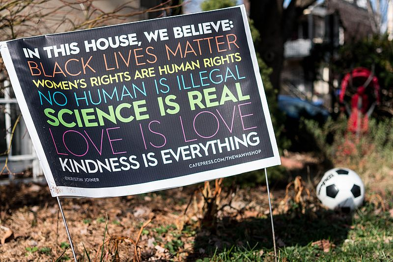
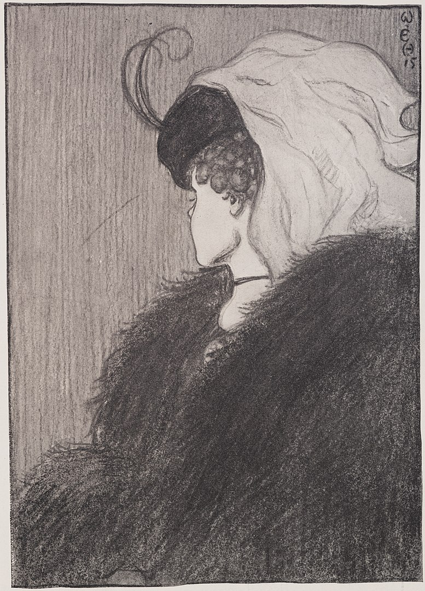
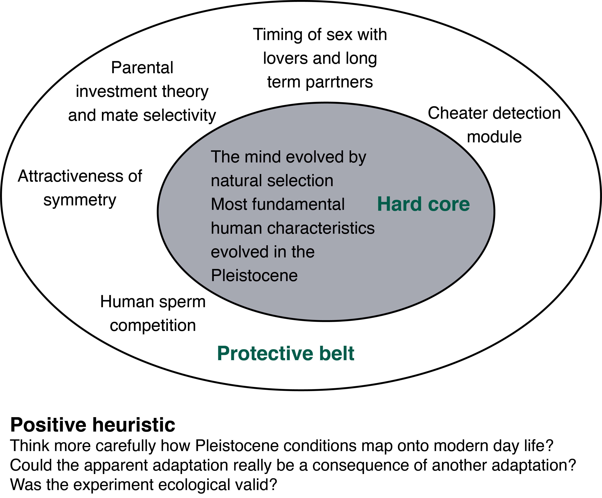

Lecture 2: What is this thing called "Science"?
Introduction to Philosophy of Science
The title of this course is Psychology as a Science. But what do we actually mean when we say something is a “science”?
Science is certainly something that is held in high esteem in public discourse. “Following the science” or “believing in science” is viewed positively. Conversely, “denying science” is viewed negatively. This positive view of science may come from the belief that there is something special about the “scientific method”. We can see this in the fact that “taking a scientific approach” is often equated with reliability.

So we might want to say that science is a special way of learning about the world. But if it is special, then what makes it special?
Answering the question, “what is science” or “what is the scientific method” might seem like something that is easy to do. After-all, many of you might have a sense that you know what science is. A claim like “science is real” (e.g., see Figure 1) certainly implies some sense of knowing what science is, or at least being able to distinguish between science and non-science or pseudo-science. But when we try and clearly articulate this, we might find that it isn’t actually that easy. In fact, the problem of telling the difference between science and non-science is a problem that has plagued philosophers for a very long time. This is something known as the demarcation problem.1
A lot of work on the demarcation problem has focused on examining methods—that is, it has looked at whether there is something like “the scientific method” that might mark science out as special. In this lecture, we’ll look at some of the prominent approaches for attempting to mark out something like “the scientific method”.
You might be asking yourself, “what is the point of this?” First, I’ll be clear about what the aim is not. The aim of this lecture is not to give you an answer to the question “What is science?” or “What is the scientific method?”. If I’m not going to answer these questions, then what am I going to do?
The aim of today is to get you to start thinking about what you think science is. I want you to apply that same kind of inquisitiveness that you might apply to thinking about a scientific problem to the problem of thinking about what science is. I want you to start thinking deeply about how we get to learn about the world–about what it means to know something about the world. I want you to do this, because I think in the long run it’ll make you a better scientist. I don’t expect you to have all the answers in your first year. As you progress in your scientific career—whether that lasts the duration of your degree or longer—you’ll learn more, and your views might change. Willingness to change your mind when new information becomes known is, after all, another feature often associated with science, so I expect your answer to the question “what is science?” to change as you learn more. So I don’t expect you to have the answer now, but I want you to start thinking about it.
The common-sense view of science
The common-sense view of science might go something like this:
Science is special because it’s knowledge based on facts
By framing science in this way, it’s often contrasted with other forms of knowledge that might be, based on authority (e.g., celebrities, religious and political leaders), revelation (e.g., personal religious or spiritual experiences), or superstition (e.g., “knowledge of the ancients”).
But by saying that science is based on facts immediately raises two questions: (1) If science is based on facts, then where do “facts” come from? (2) And how is knowledge then derived from these facts?
The common-sense view of science was formalised by two schools of thought: The empiricists and the positivists. Together they held a view that went something like this:
Knowledge should be derived from the facts of experience
We can break this idea down:
Careful and unbiased observers can directly access facts through the senses/observation.
Facts come before, and are independent of, theories.
Facts form a firm and reliable base for scientific knowledge.
But is this true?
Access through the senses
First, let us think about the idea that we can directly access facts through the senses. A simple story about how the senses work is that there are some external physical causes (light, sound waves etc.) that produce some physical changes in our sense organs (e.g., our eyes). These changes are then registered by the brain.
This account implies direct and unmediated access to the world through our senses. But is this actually the case?

The image in Figure 2 is an example of an ambiguous image. This image could be seen as an old woman or a young woman. Some of you might see one and not the other. Some of you might be able to see both and switch between the two percepts. Whichever you see, the physical causes (the light hitting our eyes) is more-or-less the same for everyone. But you might “see” different things. Although this is just a toy example, it reveals a larger point: Two scientists might “observe” something different even when looking at the same thing.
In some fields, being able to make “observations” actually requires training. This training might, for example, be in how to make observations through a microscope, training in how to distinguish different kinds of behaviour, or training in how to read an x-ray. So a simple claim that observations are “unbiased” or “straightforwardly given by the senses” seems to be false.
But what do we even mean by “facts”?
The second part of the common-sense view of science has to do with “facts”. When we think of a “fact” there are two things we could mean. First, a “fact” could refer to some external state of the world. Or second, “fact”, might refer to statements about those external states. That is, things we say about the external world.
This distinction can be a little tricky, so here is an example. The fact that this university is in East Sussex could refer to this actual university and its actual being in East Sussex. That is, some external state of the world, independent of what anyone has to say about it or whether anyone has ever said anything about it. Alternatively, it might refer to the statement: “This university is in East Sussex.”
When we talk about “facts” as the basis for science, we’re talking about these statements. That is, science is what we say about the world rather than just the world itself. We’ll call this type of fact—the things we say about the world—an “observation statement.”
Do these facts come before theories? Like the common-sense view of science might suppose? Again, let us think of an example:
Think of a child learning the word apple:
They might initially imitate the word “apple” when shown an apple by their parent.
Next, they might use the word “apple” when pointing to apples.
But then one day they might see a tennis ball and say “apple”. The parent would then correct them, and show them that a tennis ball isn’t an apple because you can’t, for example, bite into it like an apple.
By the time the child can make accurate “observation statements” about the presence of apples they might already know a lot about the properties of apples (have an extensive “theory of apples”).
Although this is just a toy example of a child learning about the world, we might see it as analogous to how a scientist learns about the world. The takeaway here is that formulating observation statements (the facts that form the basis of science) is no simple task. Formulating observation statements might require substantial background knowledge or a conceptual framework to place them in. So observation statements aren’t completely independent of theory.
But let’s say that we’ve been able to acquire some facts—whatever that might exactly mean. Will any old facts do?
Again, let’s take a simple example:
You observe that grass grows longer among the cowpats in a field.
You think this is because the dung traps moisture that helps the grass grow.
Your friend thinks this is because the dung acts as a fertiliser
Observations alone can’t distinguish these two explanations. To tell which is correct you need to intervene on the situation.
For example, you might grind up the dung so that it still fertilises the ground. Or you might use something else to trap the moisture. Intervening on the world, for example, through experiment allows you to tell what the relevant facts of your observation are.
By intervening on the system, we can tell which facts are relevant, but your scientific theories may play a part in helping to determine what is and isn’t relevant. We can see this with another example. This time from the history of cognitive psychology.
In certain kinds of reading tasks psychologists thought it was relevant that people made errors, but they didn’t think the exact nature of the errors was relevant.
But after certain kinds of theories were developed (ones based on neural network models) they came to realise that the particular kinds of errors (e.g., if people swapped letters between words) was relevant to understanding how people learn to read.
The nature of the errors which was once thought of as irrelevant now became relevant.
In short, observations can’t be completely divorced from theories.
“Objectivity”
Facts don’t care about your feelings
Guy on the internet
What the preceding ideas are trying to get to is the idea of objectivity. But the idea that science is objective in a simple sense of “objectivity” is misleading. Your conceptual framework, theoretical assumptions, and even your knowledge and training, can play a part in your observations and can influence the observation statements you can make.
“Objectivity” doesn’t mean observations free from theoretical assumptions (“the view from nowhere”). Objectivity is more complex.
“Objectivity” does mean:
Publicly and independently verifiable methods
Recognising theoretical assumptions
Theory/data that are open to revision and improvement
Free from avoidable forms of bias (confounds, cherry picking data, experimenter bias)
We might also say that science is objective in the sense that despite all this, when you make the observations either the behaviour will happen or it won’t, the detector will flash or it won’t etc. Your theory can’t make things happen.
Deriving theories from facts
The last part of the common-sense view of science is that facts form the basis of scientific knowledge—that is, that scientific knowledge is derived from facts.
Usually this idea of derived means something like logically derived. We might sum up the view like this:
Science = Facts + Logic
Guy on the internet
To understand what it might mean to logically derive scientific knowledge we need to know a bit about logic.
Deductive logic
A deductive argument is called valid if the conclusions follow from the premises. Let us take a look at two examples:
Example 1
- All research methods lectures are boring
- This is a research methods lecture
- (Therefore) this lecture is boring
In this example, if we accept that (1) and (2) are true, then we have to accept (3) as true. We cannot accept (1) and (2) as true and then deny that (3) is true because we would be contradicting ourselves.
Example 2
- Most research methods lectures are boring
- This is a research methods lecture
- (Therefore) this lecture is boring
In our new example, we can accept (1) and (2) as true without accepting (3) as true. That is, (3) does not necessarily follow from (1) and (2). This might just be a case of a research methods lecture that isn’t boring.
Deduction is only concerned with whether (3) follows from (1) and (2). It is not concerned with determining whether (1) and (2) are true or false. The argument assumes that (1) and (2) are true, but it doesn’t establish truth.
This means that conclusions can be false but valid.
Example 3
- All pigs can fly
- Percy is a pig
- (Therefore) Percy can fly.
The conclusion is valid. However, it is also false because (1) is false.
It is valid because if we accept (1) and (2) we have to accept (3)
Logic only tells us what follows from what. If there is truth in our premises, then there is truth in our conclusions. If our premises are false, then our conclusions will also be false.
Deductive logic is truth-preserving, but it can’t tell us what is true and what is false. And the conclusion is just a re-statement of the information contained in the premises. So deductive logic can’t create new knowledge. What can you do instead?
To create new knowledge we need a way to go from particular observations to generalizations. This process is called induction.
Induction
To create new knowledge, we need a way to construct arguments of the following form:
Premises
- Emily the swan is white
- Kevin the swan is white
- … the swan is white
Conclusion
All swans are white
But the problem with arguments like this is that all the premises may be true and yet the conclusion can be false. Maybe we just haven’t observed the one swan that isn’t white?
So even though we might not be able to say whether an inductive argument is true, are we able to distinguish between good and bad inductive arguments?
We might, for example, say that more observations are better than fewer observations. But if so, then how many observations are enough? We might also want to say that observations need to be made in many different contexts. But what makes a context different”? And what kinds of differences are relevant? For example, we might want to say that different contexts should be novel in some sense. Or that we should not just make trivial changes. Finally, we might want to say that good inductive arguments have no contradicting observations. But where does this leave us with probabilistic phenomena, where the phenomenon of interest might not happen every time?
Clear and simple rules aren’t easy to come by. But the bigger problem is induction can never establish truth.
So how do we ever prove anything for certain in science?. The short answer is, we don’t. We can never be certain of truth. This might feel like it leaves us on very uncomfortable ground. And this is a realisation that has certainly troubled a lot of philosophers of science. As a result, some philosophers have tried to come up with a way to put science on a firmer logical footing. And this is where we turn our attention to next.
Falsification
Instead of just collecting confirmations we can use induction and deduction together (see Figure 3).

To do this, we might collect observations and then use induction to come up with general laws and theories from these particular observations. We might then use deduction to figure out what logically follows from these general laws and theories.
This approach nicely captures the idea of testability. Our theories should make predictions about what we expect to find, and we can test these predictions with more observations.
The philosopher Karl Popper also saw trouble with relying on induction. He wanted to put science on a firmer logical footing. To do this, he proposed that while scientists can’t use deduction to figure out what is true, they can use deduction to figure out what is false! He suggested that a key quality of scientific theories is that they should be falsifiable.
Theories can come into existence through any means (wild speculation, guesses, dreams, or whatever), but once a theory has been proposed it has to be rigorously and ruthlessly tested.
To see how falsification works in practise we’ll take a look at another example.
Confirmation
Premise: A swan that was white was spotted in London at time t
Conclusion: All swans are white.
The conclusion might be true or false, but it doesn’t logically follow from the premise.
Falsification
Premise: A swan, which was not white, was spotted in Australia at time t.
Conclusion: Not all swans are white.
The conclusion logically follows from the premise, so if the premise is true the conclusion is true.
In short, we can’t prove the claim “all swans are white”. But we can reject it.
Popper also suggested that falsifiability can come in degrees. Good theories are falsifiable, better theories are more falsifiable.
Below we have some example theories:
Mars moves in an elliptical orbit
Mars and Venus move in elliptical orbits
Planets move in elliptical orbits
Of these three theories, (1) is the least falsifiable and (3) is the most falsifiable. Why? For theory (1) only an observation of Mars could falsify it. But for theory (3), an observation of Mars, Venus, Saturn, Neptune, or any other yet undiscovered planet would falsify it. That is, there are more possible observations that can count against it.
This is in contrast to bad theories. Bad theories are ones that can seemingly accommodate any observation. If two outcomes are possible and the theory can explain both then this is bad. If it can account for both possible observations then what would be evidence against the theory?
In short, we can say that good theories are broad in their applicability but precise in their predictions!
Encountering a falsifier
Once you have a theory that can be falsified, what actually happens when you make an observation that falsifies the theory? That is, what do you do when you observe something that contradicts the theory you’re testing. There are at least a couple of options.
First, you could abandon your theory. But what happens if you have a probabilistic theory? Your theory might say that you should observe phenomena A and you fail to observe it, but your theory might also say that it might not occur every single time. And what of auxiliary assumptions? Maybe your observations rely on a brain imaging machine, and you have certain assumptions about how that machine works and it’s ability to actually detect the things you want to observe.
Alternatively, if you don’t want to abandon your theory you might instead choose to modify or amend it. But are there better ways and worse ways of doing this? Let us dive into some of these issues in a little more detail.
First, the issue of probabilistic theories. Theories in psychology often tend to be probabilistic. They make claims about how things are on average, not claims about how things are in every case.2 So knowing how to deal with probabilistic theories will be very important. Much of what we do with statistics is figuring out how to test and specify probabilistic claims. For example, what does it mean for things to be different on average? How many cases do you have to observe before you have evidence for a probabilistic claim? And how many cases do you have to observe before you have evidence against a probabilistic claim (that you might previously have believed).
But putting that aside, a single contradictory observation can’t falsify a probabilistic claim because we will sometimes expect contradictions with probabilistic claims.
Let us, for now, just assume that you have a simpler non-probabilistic theory. Should contradictory observations now lead you to abandon it? You might not want to abandon your theory too quickly. Any experiment is not just testing one theory in isolation but also relies on a range of auxiliary assumptions and other support theories. For example, an experiment on memory using brain imaging is also making assumptions about the truth of theories related to physics and brain function, besides testing the theory about memory.
It may be the case that what is actually at fault is one of these auxiliary assumptions and not your theory. Telling which part of the interconnected web of theories is at fault can be tricky. Philosophers call this the Duhem-Quine problem. Popper didn’t have a good answer on how to figure out where to lay the blame for an apparent falsification. It’s certainly not an easy question to answer. But Popper also didn’t think that theories should be abandoned too quickly.
Instead of quickly abandoning theories in the face of a falsifier, Popper instead suggested some dogmatism. He pointed out that early on in some scientific field scientists might still be figuring out the details of their theories and assumptions. Therefore, they might need to make some tweaks and modifications rather than simply abandoning theories completely.
Revising and amending theories
If we do decide to amend a theory rather than abandoning it, then how do we do this? Are there good ways and bad ways to modify theories? Popper considered ad-hoc modifications to be bad. But he also thought that it was possible to come up with acceptable modifications. To see the difference between these two, let us examine the following theory:
Theory: All bread is nourishing
Once we have this theory, we might make the following observation that seemingly falsifies it:
Observation: Bread eaten in a French village in 1951 was not nourishing3
Now that we’ve encountered the falsifying observation we can choose to make a modification to our theory. I might make a modification as follows:
Modification: All bread except bread eaten in a French village in 1951 is nourishing
However, if we examine this modification, we can see that it has fewer tests. That is, the original theory can be tested by eating any bread. The modified theory can be tested by eating any bread except that particular bread. Because our modified theory has fewer tests than our original theory our modified theory is worse. Is there a way to modify theories that doesn’t make them worse? Wouldn’t it be better if our modifications could actually make the theory better? Here is another example of a modification to our theory:
Modification: All bread except bread made with flour containing ergot fungus is nourishing
This modification has made our theory better, because the modification leads to new tests. For example, we could now test the bread for the presence of fungus. Or we could cultivate the fungus and make bread with it and test whether it nourishes. Or we could analyse the fungus for poisons. All these new tests create new chances to encounter possible falsifiers and, therefore, our modification has improved upon our original theory.
Research programmes
Popper’s approach is, however, not without its problems. His focus on falsifying theories leads to at least a couple of issues. First, it can be difficult to figure out when to abandon theories and when to amend theories. And when parts of the theory are abandoned or modified are all parts of the theoretical web of the same status?
It can also be difficult to compare two theories to see which is “better”. What I mean by this is, if you have Theory A and Theory B and neither has been falsified, which is the better theory? One might think that the theory with more confirming observations is better? But then won’t trivial theories always win? The philosopher Imre Lakatos developed his idea of research programmes4 as a reaction to these two problems. Lakatos came to his view by actually observing how science operates in the real world.
One key aspect of Lakatos’s idea of research programmes is that not all parts of a science are on par. Some laws or principles are so fundamental they might be considered a defining part of the science. And other parts of the science might be more peripheral and of lower importance.
Lakatos called these fundamental parts the hard core and the more peripheral parts the protective belt. He suggested that the hard core is resistant to falsification, so when an apparent falsifier is observed the blame is placed on theories in the protective belt. Research programmes are defined by what is in their hard core.
What is in the hard core and what is in the protective belt might not always be explicit, but these might be some examples: In Cognitive Science the hard core might include the theory that the mind/brain is a particular kind of computational system and the protective belt might include specific theories about how memory works. Or in the biomedical view of mental illness the hard core might include the theory that mental illness can be explained biochemically, and the protective belt might include the dopamine theory of schizophrenia (see Figure 4 for some more examples).
When apparent falsifications occur the protective belt is up for revision, but the hard core stays intact. Falsifying the hard core amounts to abandoning the research programme. But modifying the protective belt is more commonplace.
On Lakatos’s view, scientists work within a research programme. He split guidelines for working within a research programme into a negative and positive heuristic, specifying what scientists shouldn’t do but also what they should do. The negative heuristic includes things like not abandoning the hard core. The positive heuristic is harder to specify exactly, but it includes suggestions on how to supplement the protective belt to develop the research programme further. That is, the positive heuristic should actually specify a programme of research—they should identify the problems that need to be solved.

Lakatos was also interested in comparing research programmes, something that is difficult to do on a strictly falsificationist account. He divided research programmes into those that are progressive and those that are degenerating.
Progressive research programmes are coherent. That is, they have minimal contradictions. Progressive research programmes make novel predictions that follow naturally from theories that are part of the programme. And these predictions are then confirmed by experiments.
In contrast, degenerating research programmes are those that have faced so many falsifications that they have been modified to the point of being incoherent. At this point, it’s no longer sustainable to carry on modifying the protective belt, and instead, the hard core must be abandoned!
When the hard core is abandoned then scientists move from one research programme into a new one. We can see some examples of where this might have occurred in the history of psychology. For example, the move from psychological behaviourism to cognitive science might be one example. The move from classical cognitive science to embodied cognitive science, might be another. Other examples might be the move from connectionism to deep neural networks or from sociobiology to evolutionary psychology.
But again, what is and isn’t a research programme isn’t always clear, because often the hard core and the protective belt are left implicit and not made explicit. However, I think it’s valuable to keep these distinctions in mind as you move through your university career. All this might just help to make you a better scientist.
What’s been left out
There’s so much more that I would’ve loved to have covered in this lecture, but unfortunately there simply isn’t the time. To take just a few: I would’ve liked to have been able to cover feminist perspectives on science (see Stanford Encyclopedia of Philosophy if you’re interested). And I would have also have liked to cover work on Race, Racism, and Colonialism—for example, see the work of Prescod-Weinstein (2022) if you’re interested.
Finally, if you’re interested in Philosophy of Science in general, then a good book to start with is “What is this thing called Science?” (Chalmers, 2013), from which I took the title of this lecture.
Check your understanding
Footnotes
If you want to read a short digestible piece on the demarcation problem then you can check out the wikipedia page. If you’re looking for something more philosophically heavy, then you can check out the page on Science and Pseudo-Science at the Stanford Encyclopaedia of Philosophy↩︎
A probabilistic claim might say something like on average “men are taller than women”, but of course there are shorter men and taller women. ↩︎
This is based on the true story of the Pont-Saint-Esprit mass poisoning. You can read more on wikipedia.↩︎
A similar idea to Lakatos’s idea of research programmes was developed by the philosopher Thomas Kuhn. Kuhn used the term paradigms for his idea.↩︎